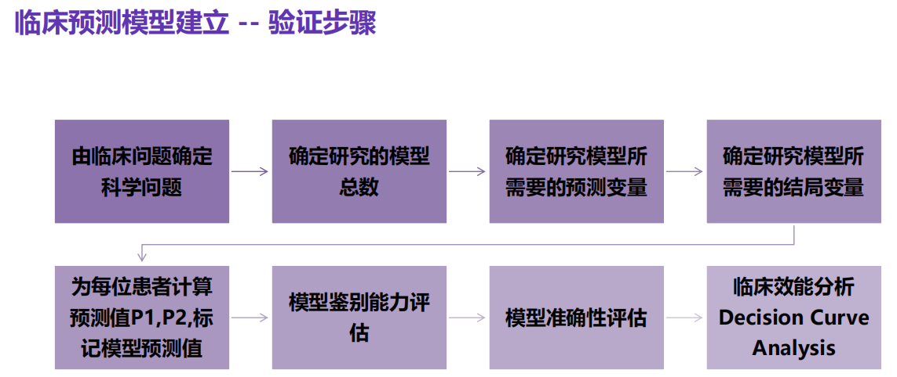
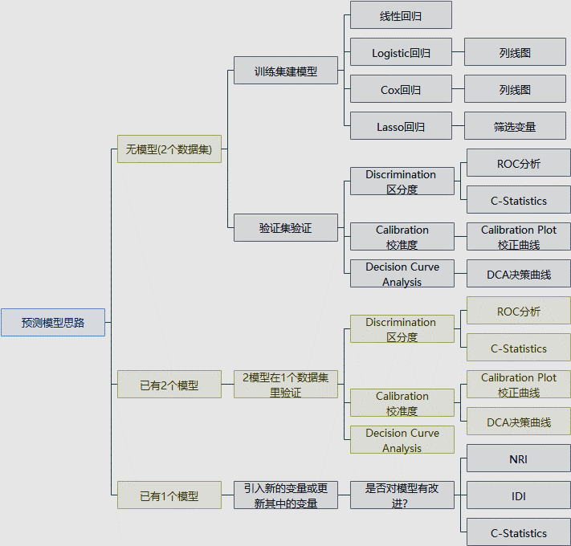
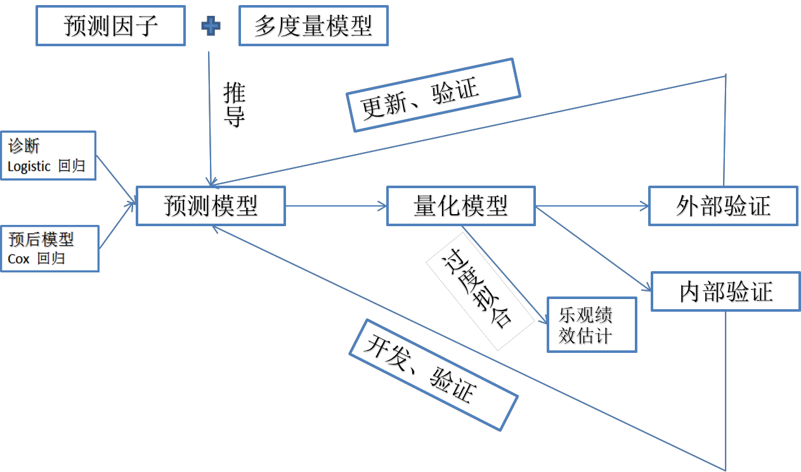
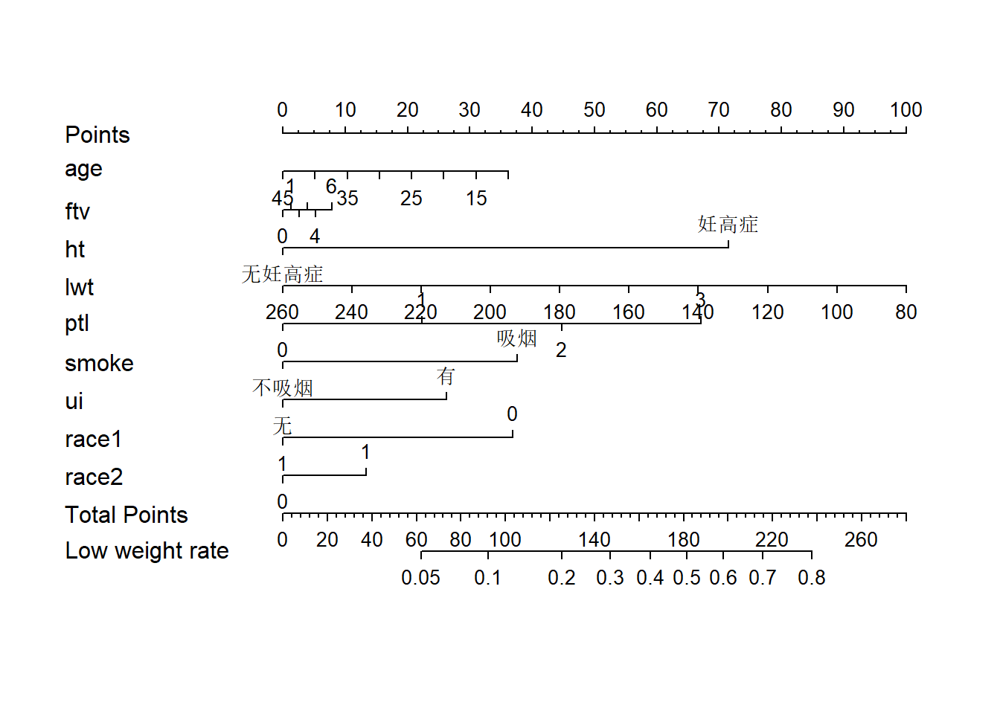
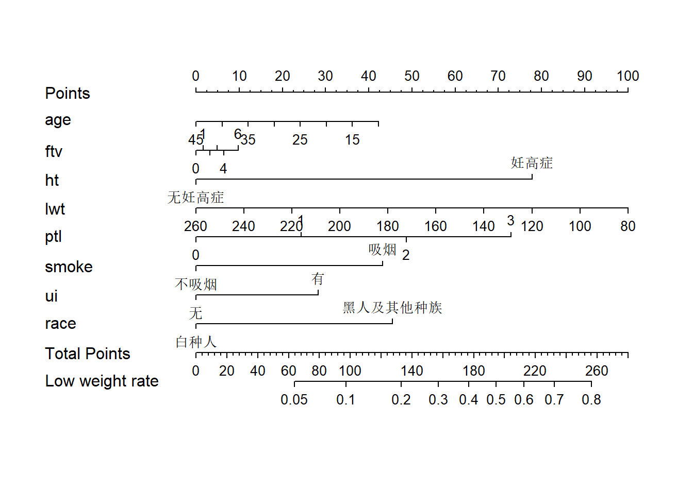
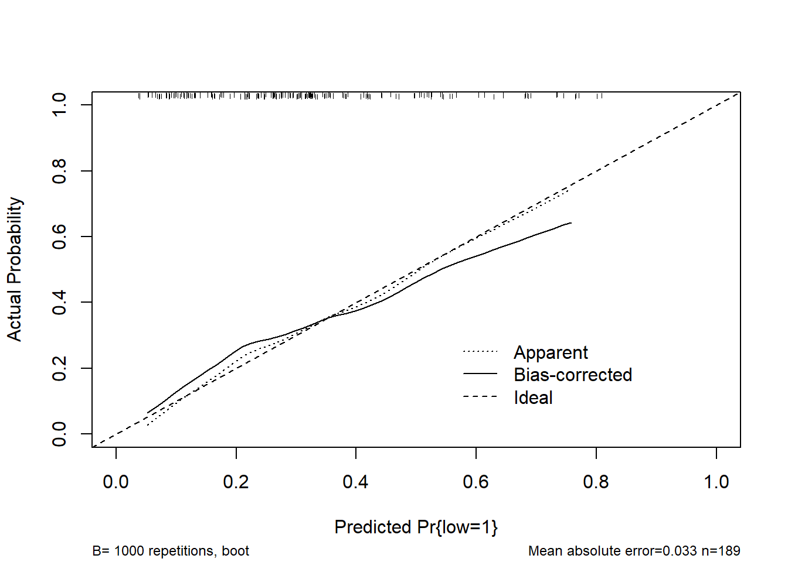
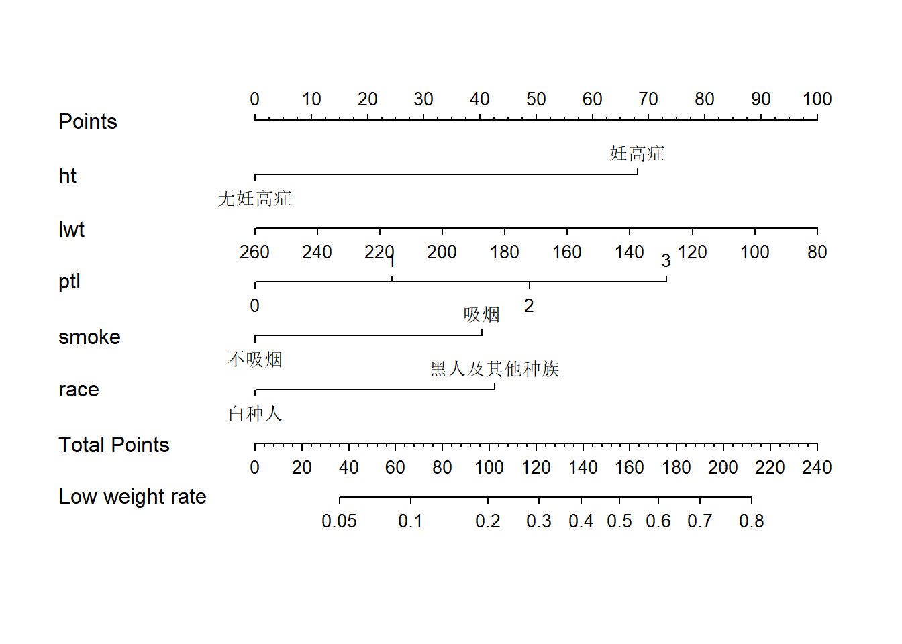
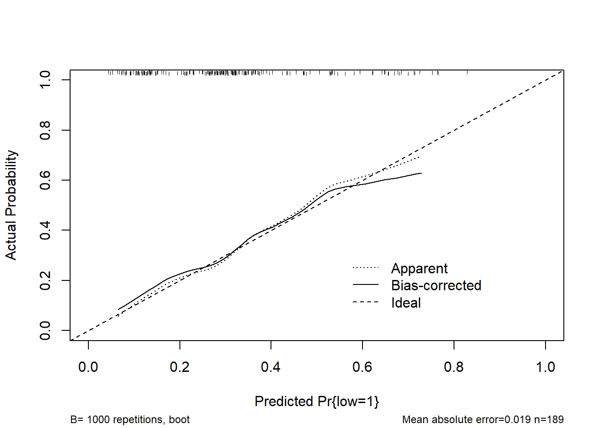
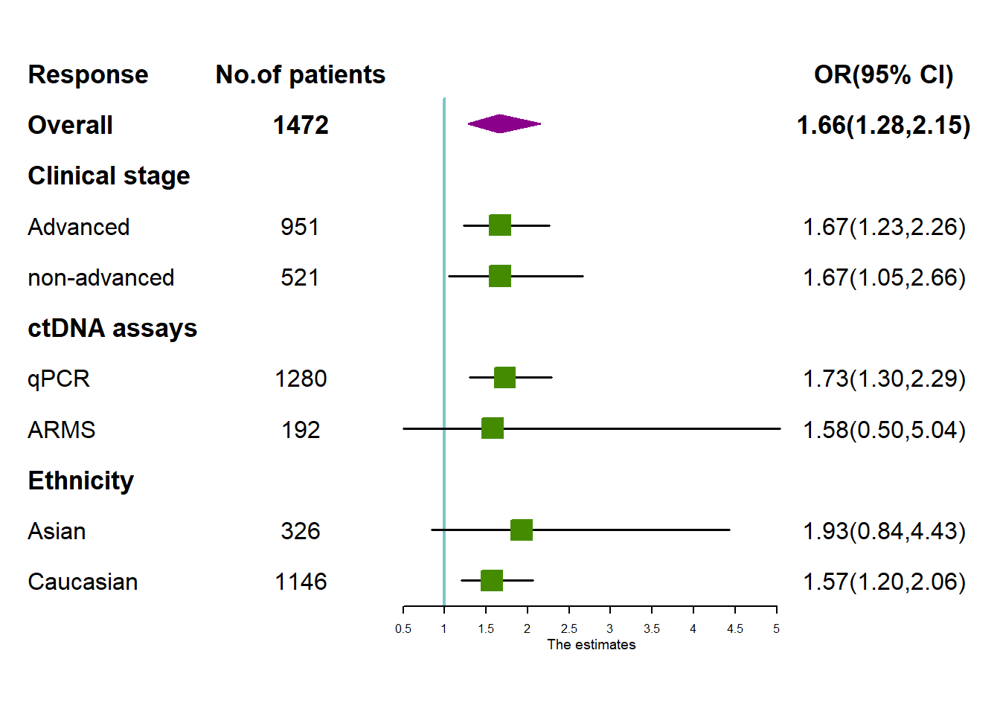

Chapter 10 Logistic回归模型
10.1 临床预测模型的本质
➢ 科研预测模型是通过已知来预测未知，而模型就是一个复杂的公式。也就是把已 知的东西通过这个模型的计算来预测未知的东西。
➢ 临床预测模型的本质就是通过回归建模分析，回归的本质就是发现规律。回归是 量化刻画，X多大程度上影响Y。尤其是多元线性、Logistic、Cox回归分析等。
➢ 模型的验证也体现着较高技术难度。模型效能评价是统计分析、数据建模、课题 设计的关键所在。
10.2 临床预测模型建立
10.2.1 验证步骤

10.2.2 研究思路

【举例】
➢ 临床上有多个心血管疾病风险预测工具：Framingham、QRISK、PROCAM、 ASSIGN评分。Heart发表综述《Graphics and Statistics for Cardiology: Clinical Prediction Rules》以心血管风险评分(CVD risk factor)为例探讨如何借 助图形优势构建疾病的预测模型，并提出了6个重要步骤。
选择一组预测变量作为潜在CVD影响因素纳入到风险评分中
选择一个合适的统计模型来分析预测变量和CVD之间的关系
从已有的预测变量中，选择足够重要的变量纳入到风险评分中
构造风险评分模型
评价风险评分模型
在临床实践中解释风险评分的使用。
10.2.3 预测类案例研究思路总结

10.3 案例1
➢ Hosmer 和 Lemeshow于1989年研究了低出生体重婴儿的影响因素。结果变量为是否娩出低出生体重儿（变量名为LOW，1=低出生体重，即婴儿出生体重<2500g; 0=非低出生体重），考虑的影响因素（自变量）有：产妇妊娠前体重（lwt，磅）；产妇年龄（age，岁）；产妇在妊娠期间是否吸烟（smoke，0＝未吸、1＝吸烟）；本次妊娠前早产次数（ptl，次）；是否患有高血压（ht，0＝未患、1＝患病）；子宫对按摩、催产素等刺激引起收缩的应激性（ui，0＝无、1＝有）；妊娠前三个月社区医生随访次数（ftv，次）；种族（race，1＝白人、2＝黑人、3＝其他民族）。
10.3.1 变量筛选
library(foreign) #为了载入sav等形式的外部数据
library(rms)
mydata<-read.spss("data/lweight.sav")
mydata<-as.data.frame(mydata) #将数据转换为数据框结构
head(mydata) #查看数据前6行## id low age lwt race smoke ptl ht ui ftv bwt
## 1 85 正常体重 19 182 黑种人 不吸烟 0 无妊高症 有 0 2523
## 2 86 正常体重 33 155 其他种族 不吸烟 0 无妊高症 无 3 2551
## 3 87 正常体重 20 105 白种人 吸烟 0 无妊高症 无 1 2557
## 4 88 正常体重 21 108 白种人 吸烟 0 无妊高症 有 2 2594
## 5 89 正常体重 18 107 白种人 吸烟 0 无妊高症 有 0 2600
## 6 91 正常体重 21 124 其他种族 不吸烟 0 无妊高症 无 0 2622#设置哑变量
mydata$low <- ifelse(mydata$low =="低出生体重",1,0)
mydata$race1 <- ifelse(mydata$race =="白种人",1,0)
mydata$race2 <- ifelse(mydata$race =="黑种人",1,0)
mydata$race3 <- ifelse(mydata$race =="其他种族",1,0)
attach(mydata)
dd<-datadist(mydata) #打包数据集
options(datadist='dd')
# 拟合回归模型，不含race3是由于将其作为参照
fit1<-lrm(low~age+ftv+ht+lwt+ptl+smoke+ui+race1+race2,
data=mydata,x=T,y=T)
fit1## Logistic Regression Model
##
## lrm(formula = low ~ age + ftv + ht + lwt + ptl + smoke + ui +
## race1 + race2, data = mydata, x = T, y = T)
##
## Model Likelihood Discrimination Rank Discrim.
## Ratio Test Indexes Indexes
## Obs 189 LR chi2 31.12 R2 0.213 C 0.738
## 0 130 d.f. 9 g 1.122 Dxy 0.476
## 1 59 Pr(> chi2) 0.0003 gr 3.070 gamma 0.477
## max |deriv| 7e-05 gp 0.207 tau-a 0.206
## Brier 0.181
##
## Coef S.E. Wald Z Pr(>|Z|)
## Intercept 1.1427 1.0873 1.05 0.2933
## age -0.0255 0.0366 -0.69 0.4871
## ftv 0.0321 0.1708 0.19 0.8509
## ht=妊高症 1.7631 0.6894 2.56 0.0105
## lwt -0.0137 0.0068 -2.02 0.0431
## ptl 0.5517 0.3446 1.60 0.1094
## smoke=吸烟 0.9275 0.3986 2.33 0.0200
## ui=有 0.6488 0.4676 1.39 0.1653
## race1 -0.9082 0.4367 -2.08 0.0375
## race2 0.3293 0.5339 0.62 0.5374
## #查看OR值
summary(fit1)## Effects Response : low
##
## Factor Low High Diff. Effect S.E. Lower 0.95 Upper 0.95
## age 19 26 7 -0.178250 0.25649 -0.68095 0.324460
## Odds Ratio 19 26 7 0.836740 NA 0.50613 1.383300
## ftv 0 1 1 0.032104 0.17077 -0.30260 0.366810
## Odds Ratio 0 1 1 1.032600 NA 0.73889 1.443100
## lwt 110 141 31 -0.424740 0.21002 -0.83637 -0.013113
## Odds Ratio 110 141 31 0.653940 NA 0.43328 0.986970
## ptl 0 3 3 1.655000 1.03390 -0.37141 3.681400
## Odds Ratio 0 3 3 5.233000 NA 0.68976 39.701000
## race1 0 1 1 -0.908230 0.43667 -1.76410 -0.052382
## Odds Ratio 0 1 1 0.403240 NA 0.17134 0.948970
## race2 0 1 1 0.329270 0.53392 -0.71718 1.375700
## Odds Ratio 0 1 1 1.390000 NA 0.48813 3.958000
## ht - 妊高症:无妊高症 1 2 NA 1.763100 0.68941 0.41191 3.114400
## Odds Ratio 1 2 NA 5.830700 NA 1.50970 22.519000
## smoke - 吸烟:不吸烟 1 2 NA 0.927480 0.39859 0.14626 1.708700
## Odds Ratio 1 2 NA 2.528100 NA 1.15750 5.521800
## ui - 有:无 1 2 NA 0.648810 0.46760 -0.26767 1.565300
## Odds Ratio 1 2 NA 1.913300 NA 0.76516 4.784100结果解读 1.1
从模型中可以筛选出有统计学意义(P＜0.05)的变量
结果为：ht=妊高症(P=0.0105)、lwt(P=0.0431)、smoke=吸烟(P=0.02)、race1(P=0.0375)
此处需要注意的是，为了设置哑变量而重新定义的变量race1在模型中是具有统计学意义的，即说明与其一起组成的哑变量——种族对于因变量的是有影响的。因为无论组成哑变量的哪一个变量有统计学意义，都可说明该哑变量是有统计学意义的。
10.4 列线图及校正曲线的绘制
#绘制列线图
nom1 <- nomogram(fit1,
fun=plogis,
fun.at=c(.001, .01, .05,
seq(.1,.9, by=.1),
.95, .99, .999),
lp=F,
funlabel="Low weight rate"
)
plot(nom1)
# fun：将线性的预测转换为具体的分值
# lp= F：不显示线性预测值，只显示最后的分值
# funlabel：不同时间的标签
# maxscale=100 刻度为0~100
# fun.at设置最后结果的范围结果解读 1.2
- 函数解释：
nomogram(fit1, fun=plogis,fun.at=c(.001, .01, .05, seq(.1,.9, by=.1), .95, .99, .999),lp=F, funlabel="Low weight rate")fit1对象fun=plogis转换刻度值，最后的分值如何转换fun.at=设置刻度间隔 -funlabel=最后一条的标签
- 我们可以看到，此处绘制的列线图，将race1和race2作为两个变量单列出来，实际上这是不必要的。我们需要将种族变量转换为一个二分类变量，即“白种人”和“黑人及其他种族”
#将种族变量二值化处理
mydata$race <- as.factor(ifelse(mydata$race=="白种人", "白种人","黑人及其他种族"))
#打包数据
dd<-datadist(mydata)
options(datadist='dd')
#拟合模型（全因素）
fit2<-lrm(low~age+ftv+ht+lwt+ptl+smoke+ui+race,data=mydata,x=T,y=T)
fit2## Logistic Regression Model
##
## lrm(formula = low ~ age + ftv + ht + lwt + ptl + smoke + ui +
## race, data = mydata, x = T, y = T)
##
## Model Likelihood Discrimination Rank Discrim.
## Ratio Test Indexes Indexes
## Obs 189 LR chi2 30.74 R2 0.211 C 0.735
## 0 130 d.f. 8 g 1.112 Dxy 0.469
## 1 59 Pr(> chi2) 0.0002 gr 3.039 gamma 0.470
## max |deriv| 7e-05 gp 0.205 tau-a 0.203
## Brier 0.182
##
## Coef S.E. Wald Z Pr(>|Z|)
## Intercept 0.0921 1.1475 0.08 0.9360
## age -0.0272 0.0365 -0.74 0.4563
## ftv 0.0365 0.1692 0.22 0.8293
## ht=妊高症 1.7516 0.6885 2.54 0.0110
## lwt -0.0125 0.0065 -1.94 0.0528
## ptl 0.5479 0.3451 1.59 0.1124
## smoke=吸烟 0.9737 0.3922 2.48 0.0130
## ui=有 0.6372 0.4701 1.36 0.1753
## race=黑人及其他种族 1.0239 0.3940 2.60 0.0094
## summary(fit2)## Effects Response : low
##
## Factor Low High Diff. Effect S.E. Lower 0.95
## age 19 26 7 -0.190330 0.25550 -0.69110
## Odds Ratio 19 26 7 0.826690 NA 0.50103
## ftv 0 1 1 0.036487 0.16923 -0.29519
## Odds Ratio 0 1 1 1.037200 NA 0.74439
## lwt 110 141 31 -0.387840 0.20030 -0.78042
## Odds Ratio 110 141 31 0.678520 NA 0.45821
## ptl 0 3 3 1.643800 1.03540 -0.38543
## Odds Ratio 0 3 3 5.175000 NA 0.68016
## ht - 妊高症:无妊高症 1 2 NA 1.751600 0.68854 0.40206
## Odds Ratio 1 2 NA 5.763700 NA 1.49490
## smoke - 吸烟:不吸烟 1 2 NA 0.973710 0.39221 0.20499
## Odds Ratio 1 2 NA 2.647700 NA 1.22750
## ui - 有:无 1 2 NA 0.637190 0.47011 -0.28422
## Odds Ratio 1 2 NA 1.891200 NA 0.75260
## race - 黑人及其他种族:白种人 1 2 NA 1.023900 0.39404 0.25154
## Odds Ratio 1 2 NA 2.783900 NA 1.28600
## Upper 0.95
## 0.310440
## 1.364000
## 0.368170
## 1.445100
## 0.004744
## 1.004800
## 3.673100
## 39.374000
## 3.101100
## 22.223000
## 1.742400
## 5.711100
## 1.558600
## 4.752100
## 1.796200
## 6.026500#绘图
nom2 <- nomogram(fit2,
fun=plogis,
fun.at=c(.001, .01, .05,
seq(.1,.9, by=.1),
.95, .99, .999),
lp=F,
funlabel="Low weight rate"
)
plot(nom2)
结果解读 1.3
将种族变量二值化后，生成的列线图更加简洁。
仔细观察后发现，在列线图中还存在一个无意义的变量ftv（贡献非常小），此时我们应选择将其去掉。
现在，先绘制该模型的校正曲线
#绘制校正曲线
cal2 <- calibrate(fit2, method='boot', B=1000)
plot(cal2,xlim=c(0,1.0),ylim=c(0,1.0))
##
## n=189 Mean absolute error=0.033 Mean squared error=0.00155
## 0.9 Quantile of absolute error=0.053结果解读 1.4
method='boot'重抽样方法，B=1000重抽样1000次。xlim=c(0,1.0)、ylim=c(0,1.0)),x、y轴的取值都是0~1
经过以上步骤，我们确定了最后想要的模型和列线图，现在绘制最终的列线图及校正曲线
fit3<-lrm(low~ht+lwt+ptl+smoke+race,data=mydata,x=T,y=T)
nom3 <- nomogram(fit3, fun=plogis,fun.at=c(.001, .01, .05, seq(.1,.9, by=.1), .95, .99, .999),lp=F, funlabel="Low weight rate")
plot(nom3)
cal3 <- calibrate(fit3, method='boot', B=1000)
plot(cal3,xlim=c(0,1.0),ylim=c(0,1.0))
##
## n=189 Mean absolute error=0.019 Mean squared error=0.00065
## 0.9 Quantile of absolute error=0.03210.5 C-Statistics 计算
➢ R中如何计算C-Statistics
- rms包中lrm函数拟合logistic回归模型，模型参数可直接读取C，Dxy
library(foreign)
library(rms)
mydata<-read.spss("data/lweight.sav")
mydata<-as.data.frame(mydata)
mydata$low <- ifelse(mydata$low =="低出生体重",1,0)
mydata$race1 <- ifelse(mydata$race =="白种人",1,0)
mydata$race2 <- ifelse(mydata$race =="黑种人",1,0)
mydata$race3 <- ifelse(mydata$race =="其他种族",1,0)
attach(mydata)## The following objects are masked from mydata (pos = 3):
##
## age, bwt, ftv, ht, id, low, lwt, ptl, race, race1, race2, race3,
## smoke, uidd<-datadist(mydata)
options(datadist='dd')
fit1<-lrm(low~age+ftv+ht+lwt+ptl+smoke+ui+race1+race2,data=mydata,x=T,y=T)
fit1 #直接读取模型中Rank Discrim.参数 C## Logistic Regression Model
##
## lrm(formula = low ~ age + ftv + ht + lwt + ptl + smoke + ui +
## race1 + race2, data = mydata, x = T, y = T)
##
## Model Likelihood Discrimination Rank Discrim.
## Ratio Test Indexes Indexes
## Obs 189 LR chi2 31.12 R2 0.213 C 0.738
## 0 130 d.f. 9 g 1.122 Dxy 0.476
## 1 59 Pr(> chi2) 0.0003 gr 3.070 gamma 0.477
## max |deriv| 7e-05 gp 0.207 tau-a 0.206
## Brier 0.181
##
## Coef S.E. Wald Z Pr(>|Z|)
## Intercept 1.1427 1.0873 1.05 0.2933
## age -0.0255 0.0366 -0.69 0.4871
## ftv 0.0321 0.1708 0.19 0.8509
## ht=妊高症 1.7631 0.6894 2.56 0.0105
## lwt -0.0137 0.0068 -2.02 0.0431
## ptl 0.5517 0.3446 1.60 0.1094
## smoke=吸烟 0.9275 0.3986 2.33 0.0200
## ui=有 0.6488 0.4676 1.39 0.1653
## race1 -0.9082 0.4367 -2.08 0.0375
## race2 0.3293 0.5339 0.62 0.5374
## - ROCR包中performance函数计算AUC
mydata$predvalue<-predict(fit2)
library(ROCR)
pred <- prediction(mydata$predvalue, mydata$low)
auc <- performance(pred,"auc")
auc #auc即是C-statistics## A performance instance
## 'Area under the ROC curve'- Hmisc包中的somers2函数直接计算C, Dxy
library(Hmisc)
somers2(mydata$predvalue, mydata$low) #somers2 {Hmisc}## C Dxy n Missing
## 0.7344198 0.4688396 189.0000000 0.000000010.6 亚组分析森林图的绘制
10.6.1 数据录入
| Response | No.of.patients | OR.95..CI. | X | X.1 | X.2 |
|---|---|---|---|---|---|
| Overall | 1472 | 1.66(1.28,2.15) | 1.66 | 1.28 | 2.15 |
| Clinical stage | NA | NA | NA | NA | |
| Advanced | 951 | 1.67(1.23,2.26) | 1.67 | 1.23 | 2.26 |
| non-advanced | 521 | 1.67(1.05,2.66) | 1.67 | 1.05 | 2.66 |
| ctDNA assays | NA | NA | NA | NA | |
| qPCR | 1280 | 1.73(1.30,2.29) | 1.73 | 1.30 | 2.29 |
| ARMS | 192 | 1.58(0.50,5.04) | 1.58 | 0.50 | 5.04 |
| Ethnicity | NA | NA | NA | NA | |
| Asian | 326 | 1.93(0.84,4.43) | 1.93 | 0.84 | 4.43 |
| Caucasian | 1146 | 1.57(1.20,2.06) | 1.57 | 1.20 | 2.06 |
10.6.2 绘制图形
library(forestplot)
rs_forest <- read.csv('data/rs_forest.csv',header = FALSE)
# 读入数据的时候大家一定要把header设置成FALSE，保证第一行不被当作列名称。
# tiff('Figure 1.tiff',height = 1600,width = 2400,res= 300)
forestplot(labeltext = as.matrix(rs_forest[,1:3]),
#设置用于文本展示的列，此处我们用数据的前三列作为文本，在图中展示
mean = rs_forest$V4, #设置均值
lower = rs_forest$V5, #设置均值的lowlimits限
upper = rs_forest$V6, #设置均值的uplimits限
is.summary = c(T,T,T,F,F,T,F,F,T,F,F),
#该参数接受一个逻辑向量，用于定义数据中的每一行是否是汇总值，
#若是，则在对应位置设置为TRUE，
#若否，则设置为FALSE；设置为TRUE的行则以粗体出现
zero = 1,
#设置参照值，此处我们展示的是OR值，故参照值是1，而不是0
boxsize = 0.4, #设置点估计的方形大小
lineheight = unit(10,'mm'),#设置图形中的行距
colgap = unit(3,'mm'),#设置图形中的列间距
lwd.zero = 2,#设置参考线的粗细
lwd.ci = 1.5,#设置区间估计线的粗细
col=fpColors(box='#458B00', summary= "#8B008B",lines = 'black',zero = '#7AC5CD'),
#使用fpColors()函数定义图形元素的颜色，
#从左至右分别对应点估计方形，汇总值，区间估计线，参考线
xlab="The estimates",#设置x轴标签
graph.pos = 3)#设置森林图的位置，此处设置为3，则出现在第三列